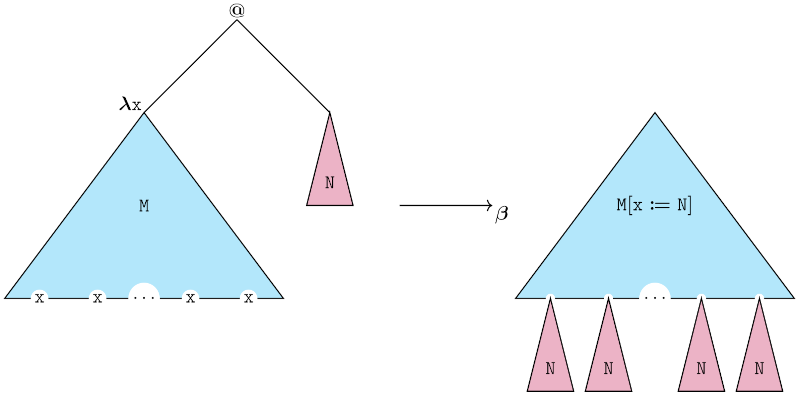

Welcome!
My name is Marcos Mercandeli-Rodrigues. I was born in Vitória, Espírito Santo, Brazil and I am currently living in Brasília, Federal District, Brazil. I hold a Bachelor's Degree in Mathematics by Universidade Federal do Espírito Santo (Ufes, 2016 - 2019). During my undergraduate years, I studied graph theory and its applications to telecommunication networks under the supervision of Professor Márcia Helena Moreira Paiva (Ufes). I also hold a Master's Degree in Mathematics by Ufes (Ufes, 2019 - 2022). During my master years, I studied a problem concerning undefinability of matroid properties in monadic second order languages under the supervision of Professor João Paulo Costalonga (Ufes). That work dealt with matroid theory, monadic second order languages, finite model theory, and Thomas Zaslavsky's gain graphs.
Currently, I am a PhD. Candidate in Mathematics at Universidade de Brasília (UnB) working with anti-unification and interactive theorem proving (PVS and Isabelle) under the supervision of Professor Mauricio Ayala-Rincón (supervisor at UnB) and Professor Temur Kutsia (cosupervisor at RISC/JKU). My fields of interest are Mathematical Logic, Theory of Computation, and Interactive Theorem Proving. In this website you will find the basic information regarding my professional journey (publications, talks, projects, and activities). Feel free to contact me if you are interested in the previously stated research fields.
I am using the Lexend font for accessibility. Feel free to contact me if you have any suggestions for further improving the website's accessibility.
